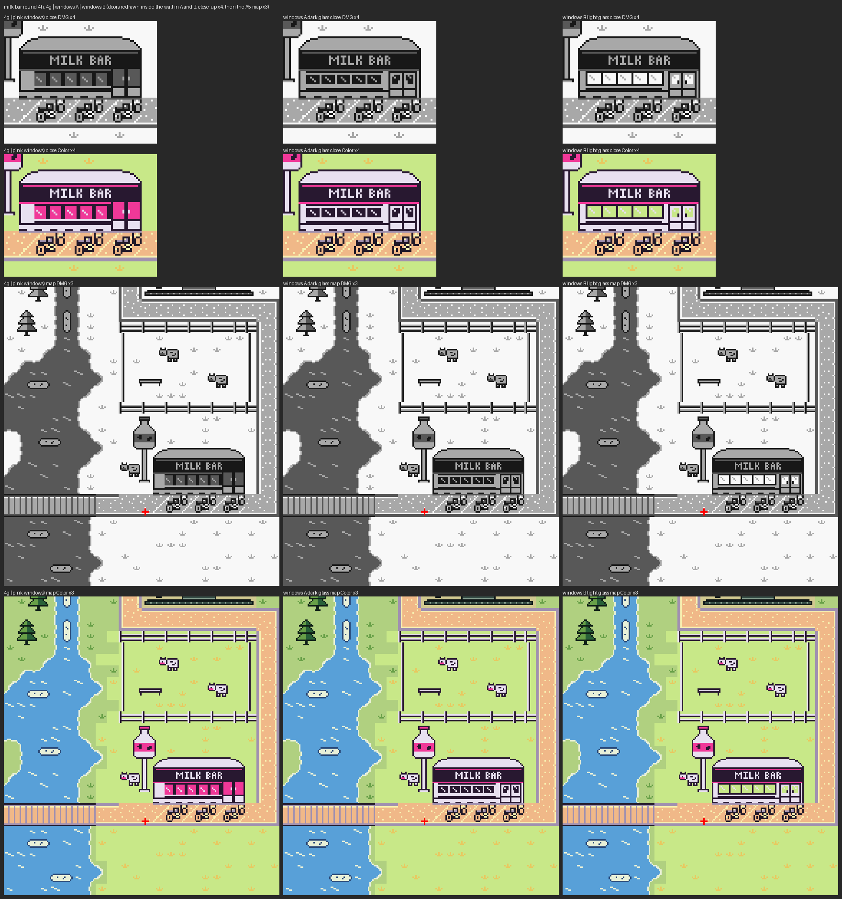
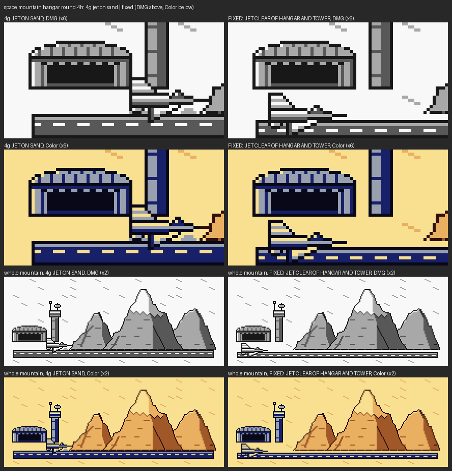

Every question waiting on your answer, with its pictures. Answered questions come off this list. Reply in chat with the number, e.g. "Q12: shared".
3 open · updated 2026-11-06
Q106
Milk bar doors and windows
A dark glass (recommended) / B light glass?
Doors redrawn inside the wall: framed, two leaves with handles, lined up with the windows.
A: dark panes with a light glint; pink only on the sign stripe, trim and bottle.
B: light panes; on Color they come out pale green (the milk bar's palette has no white), like glass reflecting grass.
+3 tiles. DMG and Color.
Before | A | B

Q108
Jet on the sand
OK to build? Yes / changes
No grey rectangle: the jet stands on the sand under the hangar, at the start of the runway, clear of the hangar and the tower.
The runway is a little thinner and runs under the whole range. The hangar doorway is empty.
No shadow: the jet sits right on the runway's edge, so there's no room for one. 97 tiles. DMG and Color.
Last round | now

Q110
Map animations
On hold: mockups of all of them, plus small slow lights, are being made.
Water ripple on the river and lake (cheapest: one shared tile animates all the water). DMG and Color.
The waterfall at the river's source.
The town fountain's water, once it's repaired.
Town bunting and the stadium pennants fluttering, with the flag.
The radar dish turning on the mountain.
Chimney smoke: lodge, igloo, factory.
The cow's tail swishing in the pasture.
Small slow lights: the mountain mast lamp, runway lights. Tiny, soft, about one blink every second or two.
Cost: each is a few tiles redrawn every few frames, same on DMG and Color. On DMG the map is already busy loading tiles while Sal walks, so I'd keep each slow and test the speed before adding more than two or three.